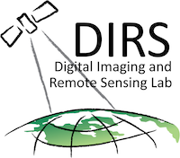

I started at UTC as a Software Engineer for the Imaging Science group.
While in this group, I spearheaded a reasearch and development project to design a plugin based image
processing framework.
The framework allowed for algorithm reuse and runtime chain configuration for different imaging systems.
I am now part of a group that works on the real-time messaging and management platform that all pieces of our
airborne and ground software use to communicate.

RIT Digital Imaging and Remote Sensing Lab
Research AssistantDecember 2013 - May 2015
While in school at RIT, I worked on a variety of research projects for the DIRS lab.
The first was working as a research assistant for a graduate student, testing, verifying and improving an
algorithm that performed feducial tracking on video of a vehicle.
The next, and most significant project involved developing an algorithm and software to perform temperature
emissivity separation from infrared spectral radiance data.
This software included an easy to use GUI that allows imaging scientists to perform these calculations in a
much more intuitive environment.